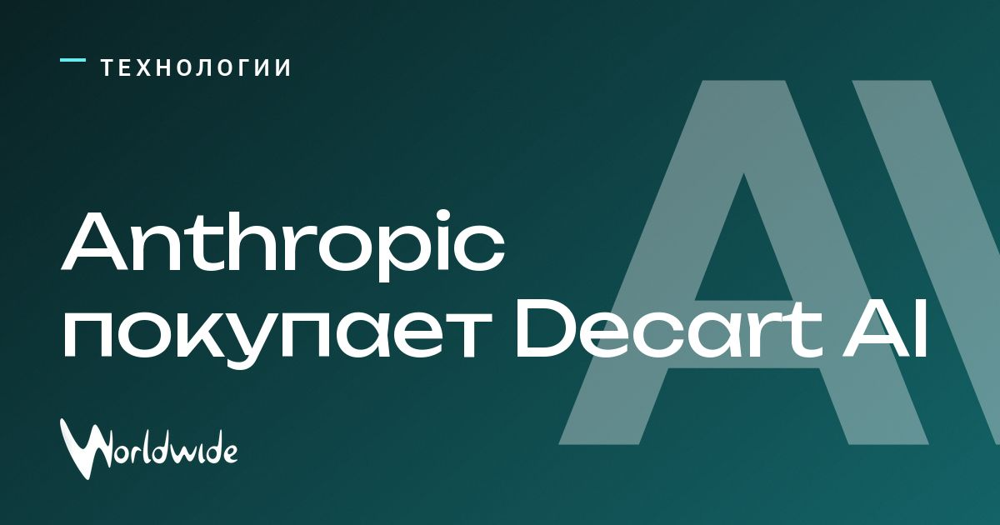

Anthropic готовит покупку Decart AI за $6 млрд ради более дешёвого ИИ

Decart AI, созданный в 2023 году израильскими инженерами, разрабатывает ПО для более эффективного использования вычислительных ресурсов.
Anthropic обсуждает покупку стартапа примерно за 6 млрд долларов. Технологии Decart AI могут снизить стоимость обучения ИИ-моделей и помочь инфраструктуре Anthropic справляться с большей нагрузкой. Среди продуктов компании — интерактивная модель Lucy AI.
Переговоры ещё не завершены и могут сорваться.
Источники: Handelsblatt, 3DNews, Interfax